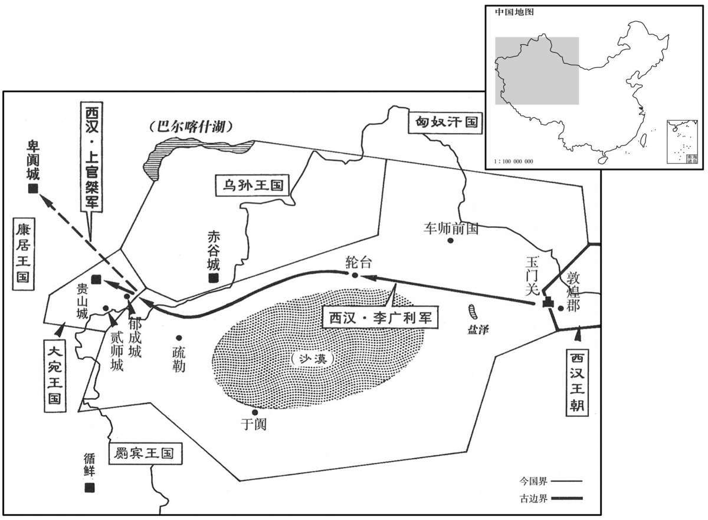

公元前102年资治通鉴：本年记事、原文与白话对照
按原书编年位置阅读；追叙和史论不等于本年发生的事件。白话采用所据译本，缺译不以生成译文补齐。
卷21 · 本年记事
公元前102年 · 汉世宗孝武皇帝太初三年
太初三年〔（己卯、前一○二）〕
上传原文的注释括号有异常，字符原样保留；无法可靠划分的段落默认全文显示。
本年事件索引（现代整理）

本年形势与背景参考图
春，正月，胶东太守延广为御史大夫。〔胶东郡属青州，唐入青、莱州界。延广，史逸其姓。守，式又翻。〕
春季，正月，胶东太守延广被任命为御史大夫。
上东巡海上，考神仙之属皆无验，令祠官礼东泰山。〔东泰山在琅邪郡朱虚县界。〕夏，四月，还，修封泰山，禅石闾。〔应劭曰：石闾，在泰山下址南方，方士以为仙人之闾。〕
汉武帝向东巡游海边，考查对神仙踪迹的寻访情况，发现都没有着落。命令祀官以礼祭告东泰山。夏季，四月，汉武帝返回长安，途中在泰山祭天，在石闾祭地。
匈奴儿单于死，子年少，匈奴立其季父右贤王呴犁湖为单于。〔“呴”，汉书作“句”。师古曰：音钩。史记作“呴”，音同，又音吁。〕
匈奴儿单于去世，因其子年纪小，匈奴部众共立儿单于的叔父右贤王湖为单于。
上遣光禄勋徐自为出五原塞数百里，〔史记正义曰：即五原郡榆林塞也，在胜州榆林县西北四十里。〕远者千余里，筑城、障、列亭，西北至庐朐，〔晋灼曰：地理志，从五原稒阳县北出石门障即得所筑城。师古曰：庐朐，山名。杜佑曰：庐朐，在麟州银城县北，犹谓之光禄塞。银城，汉圁阴县地。〕而使游击将军韩说、长平侯卫伉屯其旁；使强弩都尉路博德筑居延泽上。〔班志，居延泽在张掖居延县东北，古文以为流沙。括地志：居延海在甘州张掖县东北六十四里，甘州在长安西北二千四百六十里。说，读曰悦。伉，音抗。〕秋，匈奴大入定襄、云中，〔定襄、云中二郡属并州。〕杀略数千人，败数二千石而去，行破坏光禄所筑城、列亭、障；〔败，补迈翻。坏，音怪。〕又使右贤王入酒泉、张掖，〔酒泉、张掖二郡属凉州。〕略数千人。会军正任文击救，尽复失所得而去。〔师古曰：击救者，击匈奴以救汉人。任，音壬。〕
汉武帝派光禄勋徐自为从五原出塞数百里，最远处达千余里，修筑城墙、要塞、亭燧等，向西北直到庐朐，命游击将军韩说、长平侯卫伉屯兵庐朐附近；命强弩都尉路博德在居延泽筑城镇守。秋季，匈奴大举侵入定襄、云中二郡，杀掠数千人，打败汉朝好几名二千石官后方才离去，沿途破坏光禄勋徐自为所筑城墙、要塞、亭遂等；又派右贤王侵入酒泉、张掖二郡，掳掠数千人。正好汉军军正任文率兵前来救援，右贤王兵败，丧失了全部掳掠所得后退走。
是岁，睢阳侯张昌坐为太常乏祠，国除。〔班书功臣表及公卿表皆作“睢陵侯”。高祖功臣张敖封宣平侯，传国至曾孙壬失侯，元光三年，封其弟广为睢陵侯，绍国。昌，广之子也。睢陵县，属临淮郡。师古曰：乏祠，祠事有阙也。睢，音虽。〕
这一年，睢阳侯张昌被指控身为太常官，掌管祭祀事务有不到之处，被废除封爵食邑。
初，高祖封功臣为列侯百四十有三人。时兵革之余，大城、名都民人散亡，户口可得而数，裁什二三。〔师古曰：裁，与才同，十分之内才有二三也。〕大侯不过万家，小者五六百户。其封爵之誓曰：“使黄河如带，泰山若厉，国以永存，爰及曲裔。”〔应劭曰：封爵之誓，国家欲使功臣传祚无穷也。带，衣带也。厉，砥石也。河当何时如衣带，山当何时如厉石，言如带厉，国犹永存，以及后世之子孙也。〕申以丹书之信，重以白马之盟。及高后时，尽差第列侯位次，藏诸宗庙，副在有司。〔师古曰：副，贰也。其列侯功籍已藏于宗庙，副贰之本又在有司。〕逮文、景，四五世间，流民既归，户口亦息，列侯大者至三四万户，小国自倍，〔师古曰：谓旧五百户，今者至千户也。曹参初封万六百户，至后嗣宗免时，有户二万三千，是蕃息故也。他皆类此。〕富厚如之。〔师古曰：言其资财亦益富厚如户口之多。〕子孙骄逸，多抵法禁，陨身失国，至是见侯裁四人，〔酇侯萧寿成、缪侯郦世宗、汾阳侯靳石封并睢陵侯张昌为四人耳。见，贤遍翻。〕罔亦少密焉。〔少，诗沼翻。〕
起初，汉高祖分封功臣为侯，共一百四十三人。当时正是战乱之后，大城和著名都会的百姓散失，国家掌握的户口数字，只有从前的十分之二三。所以汉初所封列侯，其食邑大的不过一万户，小的只有五六百家。分封时，汉高祖曾经立誓说：“既使黄河变得像腰带一样狭窄，泰山变得像砥石一样矮小，各位列侯的封国食邑也将永存，传给后世子孙。”并将誓言用朱砂写下，杀白马祭告上苍，表示守信和郑重。到高后时，厘订全体列侯的位次高低，将记录存在宗庙之内，副本存于有关官署。到汉文帝、汉景帝时，已过了四五世，流民已经回归故里，户口也有增加，列侯中，大的食邑达到三四万户，小的也增加了一倍，财富的增长也与食邑相同。列侯的子孙们骄奢淫逸，多触犯国家法律，不仅本人丧命，祖宗留下的食邑也因而失去，到如今，现存的功臣侯只剩下四家，而法网也稍微严密了。
汉既亡浞野之兵，公卿议者皆愿罢宛军，专力攻胡。天子业出兵诛宛，宛小国而不能下，则大夏之属渐轻汉，而宛善马绝不来，乌孙、轮台易苦汉使，〔晋灼曰：易，轻也。师古曰：轮台，亦国名。余按轮台在车师西千余里，又西即大宛。易，以豉翻。〕为外国笑，乃案言伐宛尤不便者邓光等。〔师古曰：按其罪而行罚。〕赦囚徒，发恶少年及边骑，岁余而出敦煌者六万人，〔师古曰：兴发部署，岁余乃得行。〕负私从者不与，〔师古曰：负私粮食及私从者不在六万人数中也。从，才用翻。与，读曰预。〕牛十万，马三万匹，驴、橐驼以万数，赍粮、兵弩甚设。〔师古曰：施张甚具也。〕天下骚动，转相奉伐宛五十余校尉。宛城中无井，汲城外流水，于是遣水工徙其城下水，空以穴其城。〔师古曰：空，孔也。徙其城下水者，令从他道流，不迫其城也。空以穴其城者，围而攻之，令作孔使穿穴也。下云决其水原移之，又云围其城攻之，皆再叙其事也。一曰：既徙其水不令于城下流，而因其旧引水入城之孔，攻而穴之。余谓此书遣水工将以徙水穴城也，下书决水原攻城，正行其初计耳，非再叙其事也。〕益发戍甲卒十八万酒泉、张掖北，置居延、休屠屯兵以卫酒泉，〔班志，居延县属张掖郡，休屠县属武威郡。屠，音储。〕而发天下吏有罪者、亡命者及赘婿、贾人、故有市籍、父母大父母有市籍者凡七科，适为兵；〔赘，之芮翻。贾，音古。适，读曰谪。〕及载糒给贰师，〔师古曰：糒，干饭也；音备。〕转车人徒相连属；〔属，之欲翻。〕而拜习马者二人为执、驱马校尉，〔师古曰：习，犹便也。一人为执马校尉，一人为驱马校尉。〕备破宛择取其善马云。
汉朝丧失了赵破奴这支部队后，议论此事的公卿大臣们都希望停止征讨大宛，集中全力对付匈奴。而汉武帝则认为，既已出兵征讨大宛，如果连大宛这样一个崐小国都不能征服，那么大夏等国将逐渐轻视汉朝，大宛的好马不会来，乌孙、轮台等国将随意虐待汉朝使团，从而使汉朝遭到外国的耻笑。于是汉武帝处罚了认为征讨大宛不利的邓光等人。赦免正在服刑的囚徒，征发品行恶劣的青年和边塞地区的骑兵，一年多的时间里，派到敦煌增援贰师将军李广利的人达六万多人，背负私人装备而跟从的人未计算在内。另外，又征调了牛十万头，马三万匹，驴、骆驼等数以万计，以及十分充足的粮食和兵器弓弩。全国都受到震动，从各地调到征讨大宛部队中的校尉军官也达五十余名。因大宛城中无井，靠汲引城外河水使用，所以汉武帝派水工随军前往，准备将大宛城外河水引向别处，利用旧水道挖洞攻城。又增调了十八万戍卒进驻酒泉、张掖以北地区，并在居延、休屠两地屯兵以卫护酒泉。汉武帝下令：全国犯罪的官吏、逃亡者、入赘妇家的男子、商人、原属商人户籍者、其父母或祖父母属商人户籍者，共七种人，一律谪罚为兵。为贰师运送粮食的车辆和役夫络绎不绝。汉武帝还任命两名熟悉马匹情况的人充当执马校尉和驱马校尉，预备在攻破大宛后挑选好马。
于是贰师后复行，〔复，扶又翻。〕兵多，所至小国莫不迎，出食给军。至轮台，轮台不下，攻数日，屠之。自此而西，平行至宛城，〔师古曰：平行，言无寇难。〕兵到者三万。宛兵迎击汉兵，汉兵射败之，〔射，而亦翻。败，补卖翻。〕宛兵走入，保其城。贰师欲攻郁成城，恐留行而令宛益生诈．〔师古曰：留行，谓留止军废其行。〕乃先至宛，决其水原移之，则宛固已忧困，围其城，攻之四十余日。宛贵人谋曰：“王毋退：“毋”作“母”。】〕寡匿善马，杀汉使，〔师古曰：毋寡，宛王名。〕今杀王而出善马，汉兵宜解；即不解，乃力战而死，未晚也。”宛贵人皆以为然，共杀王。其外城坏，虏宛贵人勇将煎靡。〔师古曰：宛之贵人为将而勇者，名煎靡。煎，子延翻。〕宛大恐，走入城中，持王毋寡头，遣人使贰师约曰：“汉无攻我，我尽出善马恣所取，而给汉军食。即不听，我〔【章：十四行本重“我”字；乙十一行本同；孔本同。】〕尽杀善马，康居之救又且至，至，我居内，康居居外，与汉军战。孰计之，何从？”〔师古曰：令贰师孰计之，而欲攻战乎，欲不攻而取马乎？孰，与熟同，古字通用。〕是时，康居候视汉兵尚盛，不敢进。贰师闻宛城中新得汉人，知穿井，而其内食尚多，计以为“来诛首恶者毋寡，毋寡头已至，如此不许则坚守，而康居候汉兵罢来救宛，〔罢，读曰疲。〕破汉兵必矣；”乃许宛之约。宛乃出其马，令汉自择之，而多出食食汉军。〔师古曰：下食，读曰饲。〕汉军取其善马数十匹，中马以下牝牡三千余匹，而立宛贵人之故时遇汉善者名昧蔡为宛王，〔服虔曰：蔡，音楚言蔡。师古曰：昧，音本末之末。蔡，音千曷翻。〕与盟而罢兵。
贰师将军李广利得到巨大的人力物力增援后，再次率兵出征。由于汉军兵多，所到之处，西域各小国无不迎接，为汉军提供粮食供应。行至轮台，轮台国不降，汉军攻城数日，在城中进行了一场大屠杀。自此向西，汉军一路平安推进，直抵大宛城下，到达的士兵共三万人。大宛军队出城迎击汉军，汉军以箭射杀，大宛军大败，逃入城中拒守。李广利本想攻取郁成城，又恐怕一时难于攻克，反使大宛生出其他计谋，于是先到大宛城，挖开水源，引向别处。城中的大宛军民本已忧愁困扰，汉军再将全城包围，攻击四十余日。大宛贵族密谋道：“大王母寡将好马隐藏起来，又杀死汉朝使臣，如今我们将大王杀死，把好马献出，汉军就会解围而去；如仍不解围退兵，我们再拼死力战，也为时未晚。”大家都表示同意，于是一起行动，将大宛王杀死。此时大宛的外城已破，大宛的贵族猛将煎靡被汉军俘获。大宛极为恐慌，逃入内城，派人手持大宛王母寡的人头，前去见李广利，相约说：“汉军如不进攻我们，我们将把所有的好马都拿出来，任凭汉军随意挑选，并为汉军提供粮食。如不接受我们的建议，我们将杀死所有的好马。康居的援兵又即将到达，援兵一到，我们居内，康居兵居外，两面夹击汉军。请将军仔细考虑，怎么办好？”此时，康居探知汉军还很强盛，不敢前进。李广利闻知大宛城中新近抓到一些汉人，懂得了凿井技术，且城中粮食尚多，因而考虑：“此次前来主要是为了诛杀罪魁祸首母寡，而今母寡的人头已然送到，这样再不接受他们的请求，他们必定会坚守城池，而康居等到汉军疲惫来援救大宛，汉兵必为其所败。”所以接受了大宛的求和条件。于是，大宛将马献出，让汉军自己选择，并拿出大批粮食供给汉军。汉军挑选了数十匹好马，中等及以下的雌、雄马三千余匹，又扶立过去对汉朝态度友好的大宛贵族昧蔡登上大宛国王位，与其订立盟约后罢兵而还。
初，贰师起敦煌西，〔起，发也。谓发敦煌而西也。〕分为数军，从南、北道。校尉王申生将千余人别至郁成，郁成王击灭之，数人脱亡，走贰师。〔走，音奏；下同。〕贰师令搜粟都尉上官桀往攻〔【章：十四行本“攻”下有“破”字；乙十一行本同；孔本同；张校同。】〕郁成，〔帝置搜粟都尉，属大司农。姓谱：楚庄王少子为上官大夫，其后以为氏；秦灭楚，徙陇西之上邽。〕郁成王亡走康居，桀追至康居。康居闻汉已破宛，出郁成王与桀，桀令四骑士缚守诣贰师。上邽骑士赵弟恐失郁成王，〔班志，上邽县属陇西郡，故邽戎邑也。邽，音圭。〕拔剑击斩其首，追及贰师。
当初，李广利自敦煌起兵西进时，分兵数路，分别从南、北两条道路进兵。校尉王申生另率一千余人到郁成，被郁成王消灭。只有数人得脱，逃到李广崐利大军。李广利命搜粟都尉上官桀率兵前往攻打郁成，郁成王逃到康居，上官桀也追到康居。康居王听说汉军已打败大宛，便将郁成王献给上官桀，上官桀命四名骑兵将郁成王捆绑押送李广利军营。上骑士赵弟怕郁成王在半路上逃跑，拔剑将郁成王人头砍下后，追上李广利大军。